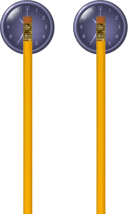
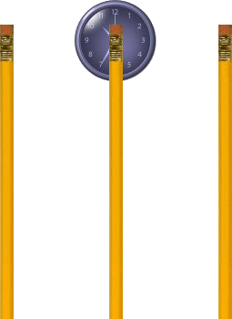
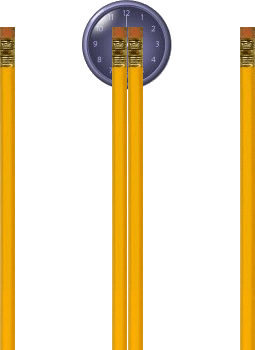

Esotropia is a strabismus condition where the eye turns inward (toward the nose). This condition may be evident not all the time or constantly. The deviation, or eye turn, may occur while looking at distance objects, near objects, or both. Esotropia is also often called cross-eyed.
The distinguishing sign of esotropia is one or either eye wandering inward. Symptoms may be mild or severe. If suppression of the deviating eye occurs, Someone can have diminished binocular vision and diminished stereopsis. One may also experience double-vision. Eye fatigue can also occur with reading.
Children with a family history of the disorder are more likely to get them. They are also common in children who have other systemic disorders. • No known cause (idiopathic); possibly familial • Down syndrome • Cerebral palsy • Hydrocephalus (Increased intra-cranial pressure) • Brain tumors • Trauma
Convergence excess may be diagnosed after a comprehensive eye examination by a qualified eye doctor. Once a diagnosis of convergence excess has been made, and plus lenses have bave been prescribed, a simple visual therapy technique that may be of further help is “pencil spreading.”
1. Hold two pencils at arm’s length, with the erasers at eye level. Looking at the erasers, find an object across the room, such as a clock on the wall (at least 20 feet away). While looking at the pencils at near, you actually should see two clocks far away. Place the pencils such that one clock appears to be behind each pencil eraser.

2. Keeping the pencils where they are, look up at the clock across the room. If you do it right, you will see one clock and three pencils. Superimpose the middle pencil (which is an image of the two pencils fused together) upon the clock. Now, keeping your eyes relaxed, slowly move your fixation from the clock to the middle pencil eraser.

3. Initially, when you do this, you may see two pencils in the middle. If so, you may need to look back at the clock to make there be only one pencil in the middle.

4. Again, slowly move your fixation to the middle pencil eraser. You need to be able to keep the middle pencil single for a few seconds before going further.
5. To keep the middle pencil single, you will be using your lateral rectus muscles to exert a little tension on your eyes. (Over-convergence will cause you to see two middle pencils.) Very gradually, about 1 to 2 millimeters at a time, spread the pencils further apart. When the middle pencil doubles, stop and try to pull your eyes outward to make it single. A mild “pulling” sensation in your eyes while doing this is normal. If the middle pencil doubles even more, you are using the wrong muscles.
You might not be able to keep the middle pencil thin; it may look like a single, “wide” pencil, which is fine. Keep gradually pulling the pencils apart until you no longer can keep a single pencil in the middle. Bring the pencils a tiny bit closer together, until a single image can be obtained, and hold your fixation there for 10 to 15 seconds. Keeping the middle pencil single like this strengthens your external rectus muscles.
It is not critical to keep the middle pencil and eraser clear as you spread apart the two pencils you are holding. What is important is to keep it single, even if it looks like a “wide” pencil.
Do this exercise 3 to 5 times a day or whenever eyestrain or a work-related headache develops. You will reach a limit beyond which you will not be able to spread the pencils any further apart. For most people, this is about 7 centimeters or about 2¾ inches. Probably the maximum possible spread for anyone is about 9 centimeters or about 3½ inches.
This exercise strengthens your lateral rectus muscles, which pull your eyes outward. Eventually, it should become easy to fuse the two pencil erasers into one at a preset distance between them without having to spread them apart. Also, there also should be less eyestrain when doing extended periods of near work, such as reading, writing, drawing, or viewing a computer screen.